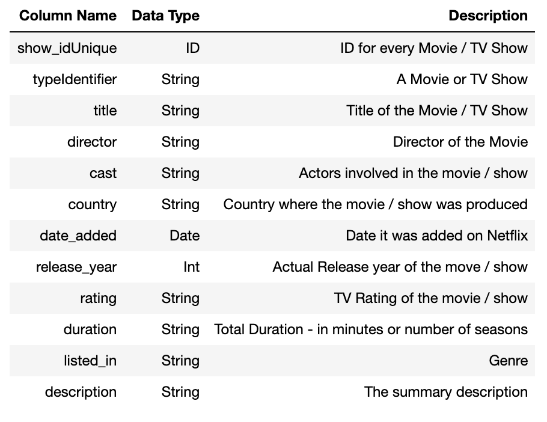

Since subscribing from Netflix in June 12, 2015, I have watched 2,236 unique episodes and 95 unique movies (and counting). My longest Netflix marathon (in a day) was 12 hours and 24 minutes long. I spend the greatest amount of time on Netflix on Sundays. All this data was collected from a Google Chrome Extension called “Netflix Viewing Stats,” which can be found here. Averaging over two hours a day on Netflix, I knew that I wanted to create a recommendation system based on my most-used streaming service.
The recommendation system I will be implementing is a content-based movie/tv show recommender, meaning that content will be recommended based on a movie that a user has watched by finding content similar to it. My goal is to implement a simplistic version of Netflix's "Because You Watched [*Name of Movie/TV Show*]", where based on a particular movie or show that you watched, you are presented with several other movies or shows to watch.
In order to implement the recommendation system I first needed to find a dataset. I began by researching Netflix datasets and decided to use the one from Kaggle because it included the most updated list of titles. This dataset contains the following dimensions:

To clean the data, I reformatted all the lists that were represented as strings into a list datatype. I also standardized the strings by lowercasing each list entry and deleted all whitespaces. Cleaning the data also included creating the “soup” column. This column is a string containing all the relevant features, concatenated together. The features I chose to include in the “soup” were: type (movie or tv show), director, top three cast members, country, and top 3 listed_in (meaning the genre of the content).
To create the classifier I first imported CountVectorizer from sklearn in order to create the count matrix. The CountVectorizer tokenizes the “soup” column, or in other words, converts the words in “soup” into a vector containing the counts of each of the words depending on the title it belongs to. This is called the count_matrix. I then standardized the elements in the count_matrix. We can use the cosine_similarity function from sklearn to calculate the cosine similarity for the count matrix that was created. The cosine similarity finds the “distance” between two titles, or how similar two titles are in the dataset. After calculating all the cosine similarities, we can retrieve the recommendations by retrieving a sorted list of the cosine similarities between a particular title and all the other titles in the dataset. Then, I decided to return the top 10 titles that were mapped to the top cosine similarities scores. These results are the recommended titles to the given title!